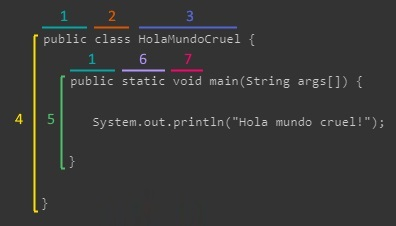

Programación
Apuntes PrácticasTerminología: ⬇️
[IDE] Entorno de desarrollo integrado:
Paradigma:
Diferentes enfoques mediante los cuales abordamos un problema computacional.Algoritmo:
Serie de instrucciones que realizan una serie de procesos con el objetivo de resolver un problema computacional.Clases:
Plantilla que agrupa una serie de objetos (reales o no reales) con su identificador y sus propiedades pero comparten características en común.Variables:
Métodos:
Bloques:

- Modificador de acceso
- Término
- Nombre
- Clase
- Método
- Modificador de no acceso
- Palabra clave
Palabras reservadas (keywords): ⬇️
- abstract: Se utilizan para implementar una abstracción en Java. Un método sin definición debe declararse como abstracto y la clase que lo contiene debe declararse como abstracto. Las clases abstractas no pueden ser instanciadas. Los métodos abstractos deben ser implementados en las subclases. La palabra clave abstract no se puede utilizar con variables o constructores. Tenga en cuenta que no se requiere que una clase abstracta tenga un método abstracto en absoluto.
- assert: Assert describe un predicado (una declaración de verdadero / falso) colocado en un programa Java para indicar que el desarrollador piensa que el predicado siempre es verdadero en ese lugar. Si una aserción se evalúa como falsa en tiempo de ejecución, se produce un error de aserción, que normalmente hace que la ejecución se anule. Opcionalmente habilitar por el método ClassLoader.
- boolean: Define una variable booleana para los valores "true" o "false" solamente. Por defecto, el valor del tipo primitivo booleano es falso. Esta palabra clave también se usa para declarar que un método devuelve un valor del tipo primitivo booleano.
- break: Se utiliza para finalizar la ejecución en el cuerpo del bucle actual.
- byte: La palabra clave byte se utiliza para declarar un campo que puede contener un entero de complemento de dos con signo de 8 bits. Esta palabra clave también se utiliza para declarar que un método devuelve un valor del byte tipo primitivo.
- case: Una declaración en el bloque de conmutación se puede etiquetar con una o más etiquetas de case. La instrucción switch evalúa su expresión, luego ejecuta todas las declaraciones que siguen la etiqueta de caso correspondiente.
- catch: Se usa junto con un bloque de prueba y un bloque finalmente opcional. Las declaraciones en el bloque catch especifican qué hacer si el bloque try lanza un tipo específico de excepción.
- char: Define una variable de carácter capaz de contener cualquier carácter del conjunto de caracteres del archivo fuente Java.
- class: Un tipo que define la implementación de un tipo particular de objeto. Una definición de clase define los campos de instancia y clase, los métodos y las clases internas, además de especificar las interfaces que implementa la clase y la superclase inmediata de la clase. Si la superclase no se especifica explícitamente, la superclase es implícitamente Object. La palabra clave de clase también se puede utilizar en el formulario Class.class para obtener un objeto Class sin necesidad de una instancia de esa clase. Por ejemplo, String.class se puede usar en lugar de hacer una nueva String (). GetClass ().
- continue: Se utiliza para reanudar la ejecución del programa al final del cuerpo del bucle actual. Si le sigue una etiqueta, continúe con la ejecución de reanudación al final del cuerpo del bucle etiquetado adjunto.
- default: La palabra clave default se puede usar opcionalmente en una instrucción de cambio para etiquetar un bloque de instrucciones que se ejecutarán si ningún caso coincide con el valor especificado; ver interruptor. Alternativamente, la palabra clave predeterminada también se puede utilizar para declarar valores predeterminados en una anotación de Java. Desde Java 8 en adelante, la palabra clave predeterminada se puede usar para permitir que una interfaz proporcione una implementación de un método.
- do: La palabra clave do se usa junto con while para crear un bucle do-while, que ejecuta un bloque de sentencias asociadas con el bucle y luego prueba una expresión booleana asociada con while. Si la expresión se evalúa como verdadera, el bloque se ejecuta de nuevo; esto continúa hasta que la expresión se evalúa como falsa.
- double: La palabra clave double se usa para declarar una variable que puede contener un número de punto flotante IEEE 754 de doble precisión de 64 bits. Esta palabra clave también se usa para declarar un método que devuelve un valor del tipo primitivo double.
- else: La palabra clave else se usa junto con if para crear una sentencia if-else, que pruebe una expresión booleana; si la expresión se evalúa como verdadera, se evalúa el bloque de instrucciones asociadas con el if; si se evalúa como falso, se evalúa el bloque de declaraciones asociadas con else.
- enum (agregada en J2SE 5.0): Una palabra clave de Java utilizada para declarar un tipo enumerado. Las enumeraciones amplían la clase base Enum.
- exports: Se utiliza en java modular para exportar un paquete con un módulo. Esta palabra clave sólo está disponible en Java 9 y versiones posteriores.
- extends: Se utiliza en una declaración de clase para especificar la superclase; utilizado en una declaración de interfaz para especificar una o más superinterfaces. La clase X extiende la clase Y para agregar funcionalidad, ya sea agregando campos o métodos a la clase Y, o reemplazando los métodos de la clase Y. Una interfaz Z extiende una o más interfaces al agregar métodos. Se dice que la clase X es una subclase de la clase Y; Se dice que la interfaz Z es una subinterfaz de las interfaces que se extiende. También se usa para especificar un límite superior en un parámetro de tipo en Genéricos.
- final: Defina una entidad una vez que no se puede cambiar ni derivar de más adelante. Más específicamente: una clase final no puede ser subclasificada, un método final no puede ser anulado, y una variable final puede aparecer como máximo una vez como una expresión de la mano izquierda en un comando ejecutado. Todos los métodos en una clase final son implícitamente finales.
- finally: Se utiliza para definir un bloque de instrucciones para un bloque definido previamente por la palabra clave try. El bloque finally se ejecuta después de que la ejecución sale del bloque try y de cualquier cláusula catch asociada sin importar si se lanzó o capturó una excepción, o si se ejecutó el método de izquierda en medio de los bloques try o catch usando la palabra clave return.
- float: La palabra clave flotante se usa para declarar una variable que puede contener un número punto flotante IEEE 754 de precisión simple de 32 bits. Esta palabra clave también se usa para declarar que un método devuelve un valor del tipo primitivo float.
- for: La palabra clave for se utiliza para crear un bucle for, que especifica una inicialización variable, una expresión booleana y un incremento. La inicialización de la variable se realiza primero y luego se evalúa la expresión booleana. Si la expresión se evalúa como verdadera, el bloque de instrucciones asociado con el bucle se ejecuta, y luego se realiza el incremento. La expresión booleana se evalúa de nuevo; esto continúa hasta que la expresión se evalúa como falsa. A partir de J2SE 5.0, la palabra clave for también se puede usar para crear el llamado "bucle mejorado para", que especifica una matriz o un objeto iterable; Cada iteración del bucle ejecuta el bloque asociado de declaraciones utilizando un elemento diferente en la matriz o Iterable.
- if: La palabra clave if se usa para crear una sentencia if, que prueba una expresión booleana; si la expresión se evalúa como verdadera, se ejecuta el bloque de instrucciones asociadas con la instrucción if. Esta palabra clave también se puede utilizar para crear una sentencia if-else; ver otra cosa.
- implements: Incluido en una declaración de clase para especificar una o más interfaces implementadas por la clase actual. Una clase hereda los tipos y métodos abstractos declarados por las interfaces.
- import: Se usa al comienzo de un archivo fuente para especificar clases o paquetes completos de Java para consultarlos más adelante sin incluir sus nombres de paquete en la referencia. Desde J2SE 5.0, las declaraciones de importación pueden importar miembros estáticos de una clase.
- instanceof: Un operador binario que toma una referencia de objeto como su primer operando y una clase o interfaz como su segundo operando y produce un resultado booleano. El instanceofoperator evalúa como verdadero si y solo si el tipo de tiempo de ejecución del objeto es compatible con la clase o la interfaz.
- int: La palabra clave int se utiliza para declarar una variable que puede contener un entero de complemento a dos con signo de 32 bits. Esta palabra clave también se usa para declarar que un método devuelve un valor del tipo primitivo int.
- interface: Se utiliza para declarar un tipo especial de clase que solo contiene métodos abstractos o predeterminados, campos constantes (final estático) e interfaces estáticas. Más tarde puede implementarse por clases que declaran la interfaz con la palabra clave implementa. Como la herencia múltiple no está permitida en Java, las interfaces se utilizan para evitarla. Una interfaz se puede definir dentro de otra interfaz.
- long: La palabra clave larga se usa para declarar una variable que puede contener un entero de complemento a dos con signo de 64 bits. Esta palabra clave también se usa para declarar que un método devuelve un valor del tipo primitivo long.
- module: La palabra clave del módulo se utiliza para declarar un módulo dentro de una aplicación Java. Esta palabra clave solo está disponible en Java 9 y versiones posteriores.
- native: Se usa en declaraciones de métodos para especificar que el método no se implementa en el mismo archivo fuente de Java, sino en otro idioma.
- new: Se utiliza para crear una instancia de una clase o un objeto de matriz. El uso de palabras clave para este fin no es completamente necesario (como lo ejemplifica Scala), aunque sirve para dos propósitos: permite la existencia de un espacio de nombres diferente para los métodos y nombres de clase, define estática y localmente que se crea un objeto nuevo, y de qué tipo de tiempo de ejecución es (podría decirse que introduce dependencia en el código).
- package: El package Java es un grupo de clases e interfaces similares. Los paquetes se declaran con la palabra clave del package.
- private: La palabra clave private se usa en la declaración de un método, campo o clase interna; Los miembros privados solo pueden ser accedidos por otros miembros de su propia clase.
- protected: La palabra clave protected se usa en la declaración de un método, campo o clase interna; Los miembros protegidos solo pueden acceder a los miembros de su propia clase, las subclases de esa clase o las clases del mismo paquete.
- public: La palabra clave public se usa en la declaración de una clase, método o campo; Los miembros de cualquier clase pueden acceder a clases públicas, métodos y campos.
- requires: Se utiliza para especificar las bibliotecas requeridas dentro de un módulo. Esta palabra clave solo está disponible en Java 9 y versiones posteriores.
- return: Se utiliza para finalizar la ejecución de un método. Puede ir seguido de un valor requerido por la definición del método que se devuelve al llamante.
- short: La palabra clave corta se usa para declarar un campo que puede contener un entero de complemento de dos con signo de 16 bits. Esta palabra clave también se usa para declarar que un método devuelve un valor del tipo primitivo short.
- static: Se utiliza para declarar un campo, método o clase interna como un campo de clase. Las clases mantienen una copia de los campos de clase independientemente de cuántas instancias existen de esa clase. Staticalso se usa para definir un método como un método de clase. Los métodos de clase están vinculados a la clase en lugar de a una instancia específica, y solo pueden operar en campos de clase. (Las clases e interfaces declaradas como miembros estáticos de otra clase o interfaz son en realidad clases de nivel superior y no son clases internas).
- strictfp (agregado en J2SE 1.2): Una palabra clave de Java utilizada para restringir la precisión y el redondeo de los cálculos de punto flotante para garantizar la portabilidad.
- super: Herencia básicamente utilizada para lograr la vinculación dinámica o el polimorfismo en tiempo de ejecución en java. Se utiliza para acceder a los miembros de una clase heredada por la clase en la que aparece. Permite que una subclase acceda a métodos anulados y miembros ocultos de su superclase. La palabra clave super también se usa para reenviar una llamada de un constructor a un constructor en la superclase. También se usa para especificar un límite inferior en un parámetro de tipo en Genéricos.
- switch: La palabra clave switch se usa junto con case y default para crear una instrucción switch, que evalúa una variable, compara su valor con un caso específico y ejecuta el bloque de declaraciones asociadas con ese caso. Si no se compara el valor, se ejecuta el bloque opcional etiquetado de forma predeterminada, si se incluye.
- synchronized: Se utiliza en la declaración de un método o bloque de código para adquirir el bloqueo mutex para un objeto mientras el hilo actual ejecuta el código. Para los métodos estáticos, el objeto bloqueado es la clase de la clase. Garantiza que, como máximo, un subproceso a la vez que opera en el mismo objeto ejecuta ese código. El bloqueo mutex se libera automáticamente cuando la ejecución sale del código sincronizado. Los campos, clases e interfaces no pueden ser declarados como sincronizados.
- this: Se utiliza para representar una instancia de la clase en la que aparece. Esto se puede usar para acceder a los miembros de la clase y como referencia a la instancia actual. La palabra clave también se usa para reenviar una llamada de un constructor en una clase a otro constructor en la misma clase.
- throw: Hace que se lance la instancia de excepción declarada. Esto hace que la ejecución continúe con el primer controlador de excepciones de cierre declarado por la palabra clave catch para manejar un tipo de excepción compatible de asignación. Si no se encuentra dicho controlador de excepciones en el método actual, entonces el método vuelve y el proceso se repite en el método de llamada. Si no se encuentra un controlador de excepciones en ninguna llamada de método en la pila, entonces la excepción se pasa al controlador de excepciones no capturado del subproceso.
- throws: Se utiliza en las declaraciones de métodos para especificar qué excepciones no se manejan dentro del método, sino que se pasan al siguiente nivel superior del programa. Todas las excepciones no detectadas en un método que no sean instancias de RuntimeException deben declararse utilizando la palabra clave throws.
- transient: Declara que un campo de instancia no es parte de la forma serializada predeterminada de un objeto. Cuando un objeto se serializa, solo los valores de sus campos de instancia no transitorios se incluyen en la representación serial predeterminada. Cuando un objeto se deserializa, los campos transitorios se inicializan solo a su valor predeterminado. Si no se utiliza el formulario predeterminado, por ejemplo, cuando se declara una tabla serialPersistentFields en la jerarquía de clases, se ignoran todas las palabras clave transitorias.
- try: Define un bloque de sentencias que tienen manejo de excepciones. Si se lanza una excepción dentro del bloque try, un bloque catch opcional puede manejar los tipos de excepción declarados. Además, se puede declarar un bloque finalmente opcional que se ejecutará cuando la ejecución salga de las cláusulas try y catch, independientemente de si se lanza una excepción o no. Un bloque try debe tener al menos una cláusula catch o un bloque finally.
- void: La palabra clave void se usa para declarar que un método no devuelve ningún valor.
- volatile: Se utiliza en declaraciones de campo para especificar que la variable se modifica de forma asíncrona mediante subprocesos que se ejecutan simultáneamente. Los métodos, las clases y las interfaces no se pueden declarar volátiles, ni las variables o los parámetros locales.
- while: La palabra clave while se usa para crear un bucle while, que prueba una expresión booleana y ejecuta el bloque de sentencias asociadas con el bucle si la expresión se evalúa como verdadera; esto continúa hasta que la expresión se evalúa como falsa. Esta palabra clave también se puede utilizar para crear un bucle do-while; ver hacer.
- true:
- null:
- false:
- var: Un identificador especial que no se puede usar como nombre de tipo (desde Java 10).No usado.
- const: Aunque está reservado como palabra clave en Java, const no se usa y no tiene función. Para definir constantes en Java, vea la palabra clave final.
- goto: Aunque reservado como una palabra clave en Java, goto no se usa y no tiene ninguna función. Los paradigmas de programación son una forma de clasificar los lenguajes de programación según sus características. Las lenguas se pueden clasificar en múltiples paradigmas. Algunos paradigmas se ocupan principalmente de las implicaciones para el modelo de ejecución del lenguaje, como permitir efectos secundarios o si la secuencia de operaciones está definida por el modelo de ejecución. Otros paradigmas se refieren principalmente a la forma en que se organiza el código, como agrupar un código en unidades junto con el estado que es modificado por el código. Sin embargo, otros están relacionados principalmente con el estilo de la sintaxis y la gramática.
Palabras reservadas para valores literales: Un valor literal booleano. No son considerados palabras clave de Java, sino literales. Ahora bien, tampoco se pueden utilizar como indentificadores.
Identificadores especiales: